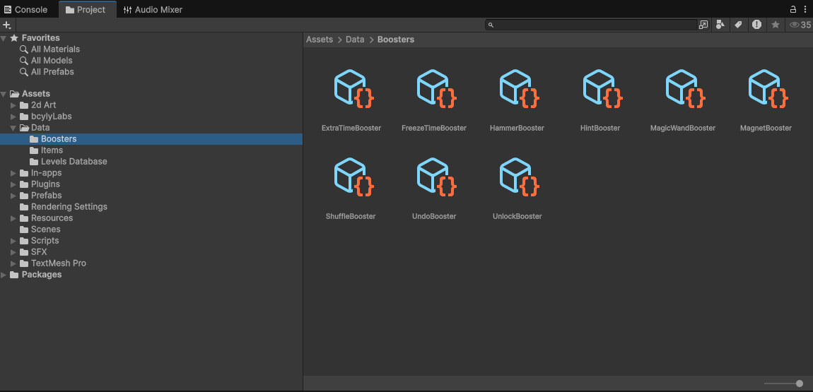
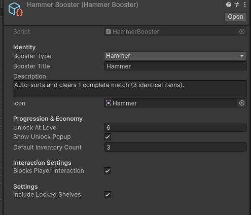
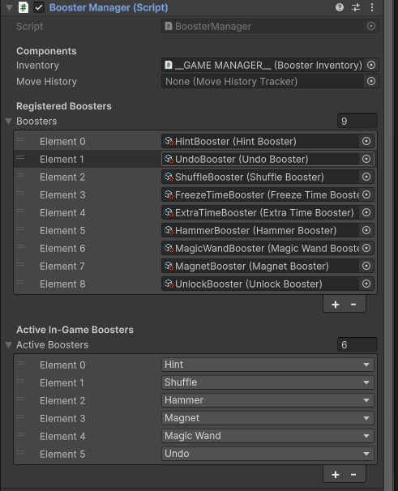
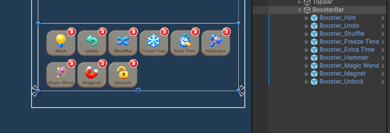
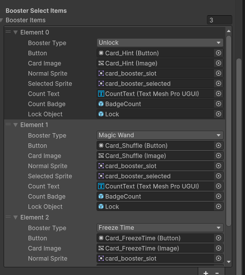
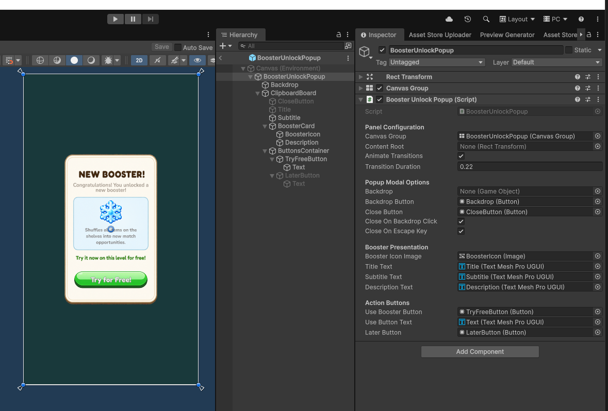

10. Manage Boosters
Configure 9 gameplay boosters: Hint, Undo, Shuffle, Freeze Time, Extra Time, Hammer, Magnet, Magic Wand, and Unlock.
10.1 Find the booster assets
Open Assets/Data/Boosters.

| Booster | What it does | Extra editable setting |
|---|---|---|
| Hint | Highlights a helpful move. | Highlight Duration |
| Undo | Reverses an eligible recorded move. | Uses Move History Tracker |
| Shuffle | Rearranges items. | Uses the existing shuffle behavior |
| Freeze Time | Stops the timer temporarily while allowing play. | Freeze Duration |
| Extra Time | Adds time to a timed level. | Bonus Seconds |
| Hammer | Clears one available match. | Include Locked Shelves |
| Magnet | Attempts to clear up to three available matches. | Include Locked Shelves |
| Magic Wand | Converts selected item types to a chosen type. | Types To Convert Count |
| Unlock | Unlocks one shelf, or clears one slot obstacle if no locked shelf is available. | Uses the existing unlock behavior |
A booster must have a valid situation to act on. For example, Undo needs a recorded move and Extra Time needs a timed level.
10.2 Change a booster's settings
Select its data asset. The example below shows the Hammer asset and the common settings used by boosters.

| Field | What it does |
|---|---|
| Booster Type | Connects the asset to its existing booster identity. Keep it matched to the asset's behavior. |
| Booster Title | Name shown by the relevant booster UI. |
| Description | Explains the booster to the player. |
| Icon | Booster artwork. |
| Unlock At Level | First level where the booster becomes available. |
| Show Unlock Popup | Enables the introduction popup at its unlock level. |
| Default Inventory Count | Stored on the asset. In this project's current inventory loading flow, starting stock comes from Booster Inventory's Initial Count Per Booster. |
| Blocks Player Interaction | Controls input blocking during the booster's action where supported. Freeze Time keeps player interaction available. |
10.3 Choose the active boosters
Select the game manager and expand Booster Manager.

- Inventory: Reference to Booster Inventory.
- Move History: Reference to the tracker used by Undo. Assign it when using Undo.
- Boosters: The registered booster assets.
- Active Boosters: The booster types offered through the active in-game booster flow.
Keep the required asset registered, then choose the types you want active. Check the booster bar and pre-level selection separately; they also have their own UI references.
10.4 Change starting stock
On the same game manager, expand Booster Inventory.
- Initial Count Per Booster: Starting count for each type that has no saved inventory yet.
- Infinite Boosters: Stops consumption for testing.
Saved inventory takes priority over new starting values. Turn Infinite Boosters off before your final check.
10.5 Change the booster bar

Select the relevant button under BoosterBar. Its Booster Button UI component has Booster Type and references for the button, icon, name, count, badge, and lock visual.
When duplicating a booster button, set the correct Booster Type and connect its own child objects. Check the Booster Bar UI > Buttons list too.
10.6 Change pre-level selection

In LevelStartPopup, each Booster Select Item connects a Booster Type, Button, Card Image, Normal Sprite, Selected Sprite, Count Text, Count Badge, and Lock Object. Change the type to choose the existing booster offered by that card. Keep its child references assigned.
10.7 Change the unlock popup

Open BoosterUnlockPopup.prefab. Replace its graphics and adjust the connected title, subtitle, description, icon, and action button. The selected booster supplies its content when opened.
Unlock popup history is saved. A popup already shown on your test profile may not appear again simply because you change its artwork.